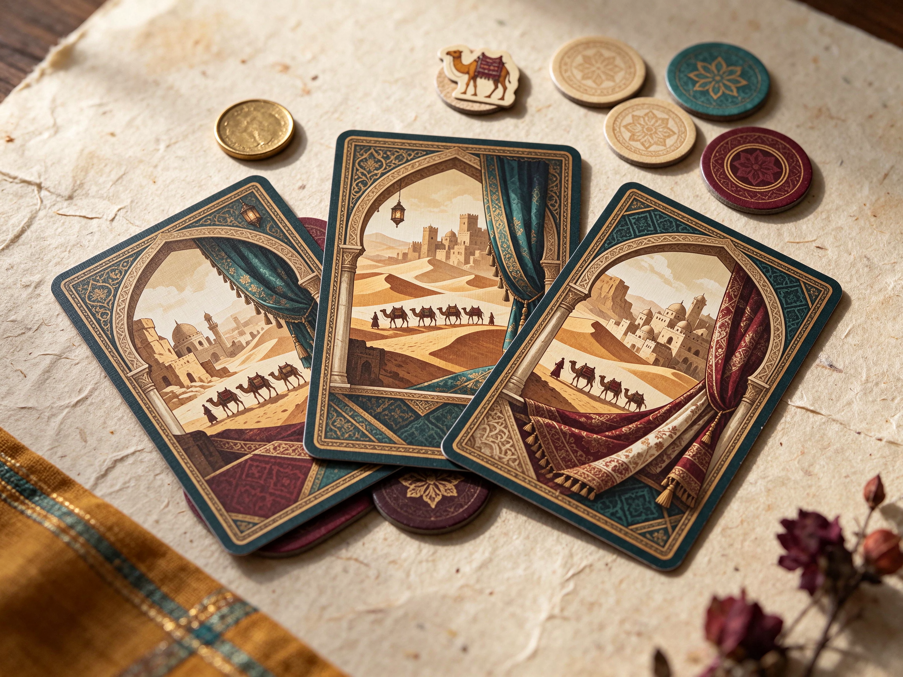
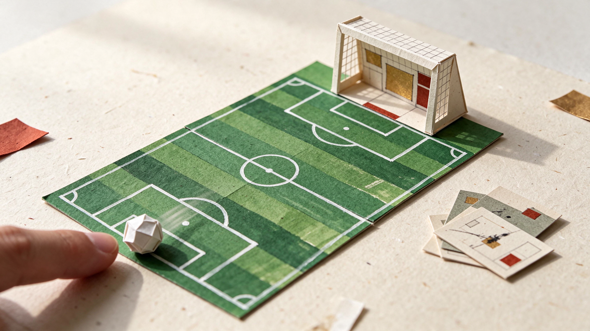

لعبة بطاقات • تجارة ومجازفة
رمل وحرير
اجمع البضائع وقرّر متى تتابع الرحلة ومتى تؤمّن غنيمتك.
من ألعاب البطاقات والمجازفة إلى تحدّي كرة ورقية نحو المرمى — اختَر لعبتك وابدأ مغامرة جديدة على الطاولة.
اختر لعبة لعرض فكرتها وملفاتها. لكل لعبة صفحتها الخاصة.

اجمع البضائع وقرّر متى تتابع الرحلة ومتى تؤمّن غنيمتك.

كرة صغيرة تُنقر باتجاه مرمى ورقي؛ بطاقات التحدّي ومناطق الهدف تضيف تنويعًا للمحاولات.
ما لقينا لعبة تطابق بحثك. جرّب كلمة أو تصنيفًا آخر.
الموقع يجمع الآن لعبتين ورقيتين. ستظهر الألعاب القادمة هنا ببطاقاتها وصفحاتها الخاصة.
جرّب ألعابي الإلكترونيةاكتشف المزيد من ألعاب ymisk019 استكشف الألعابلعبة تجارة ومجازفة على الطاولة. اجمع البضائع من الطريق، راقب قطاع الطرق، واختر اللحظة المناسبة للتخييم وتأمين النقاط.
تنتهي الجولة عند نفاد الرزمة؛ يخيّم اللاعب الذي ما زال في الطريق، ثم تُحسب نقاط المخازن. هذا ملخص سريع، والتفاصيل في القواعد الكاملة.
تحدٍّ لطيف على الطاولة: كرة مصنوعة من الورق، ومرمى مقسّم لمناطق هدف، ونقرة إصبع واحدة قد تغيّر النتيجة.
بدل مباراة على شاشة، تلعبون بملعب ومرمى ورقيين. يوجّه اللاعب الكرة الورقية بنقرة إصبع نحو المرمى، وتضيف بطاقات التحدّي ومناطق الهدف عنصر المفاجأة لكل تسديدة. هذا شرح للفكرة المستخلصة من الملف المرفق، وليس بديلًا عن قواعده الكاملة.
الملف المرفق يتضمن صفحات اللعبة ورسومًا وموادًا إرشادية؛ الفيديو أدناه يشرح الفكرة فقط ولا يشرح القص أو التركيب.
القيم الدقيقة لمناطق المرمى وبطاقات التحدّي تبقى كما في ملف PDF؛ لا يغيّر هذا الشرح قواعده.
افتح قواعد اللعبة PDFكرة صغيرة، نقرة بالإصبع، ومرمى له أكثر من منطقة: هذه هي روح التحدّي.
سجّل نقاط كل تسديدة بحسب قيمة المنطقة في ملف اللعبة؛ لا نفترض قيمة رقمية من عندنا.
أدخل نقاط التسديدات بحسب منطقة الهدف في PDF.
تصميم وألعاب ورقية من ymisk019
مؤقّت، تحديات اختيارية، سجل نتائج، إعدادات وصول وطباعة مختصرة. تُحفظ النتائج والإعدادات على هذا الجهاز فقط.
اختر وقتًا لكل لاعب. عند انتقال الدور، أعد ضبطه وابدأ الوقت الجديد. انتهاء المؤقّت لا يغيّر قواعد اللعبة تلقائيًا.
المؤقّت جاهز.
اسحبوا فكرة مرحة قبل الجولة أو خلالها، من دون تغيير القواعد الرسمية.
كل التحديات اختيارية للمرح، ولا تستبدل تعليمات ملف اللعبة.
نتائج رمل وحرير تُحفظ بعد انتهاء الجولة، ونتيجة كرة المرمى تُحفظ من زر المسجّل. السجل محلي على هذا الجهاز.
اختيار عدد المشاركين وأسمائهم موجود في إعداد كل لعبة. افتح الصفحة المناسبة ثم اضبط اللاعبين قبل البدء.
رمل وحرير يدعم ٢–٤ لاعبين، ولوحة كرة المرمى تدعم ٢–٦ مشاركين. عدد التسديدات في قواعد كرة المرمى يبقى كما في PDF.
غيّر إعدادات العرض لتناسبك. تُحفظ تفضيلاتك محليًا ويمكنك تبديلها في أي وقت.
اطبع ملخصًا سريعًا للعبتين من دون القوائم والعناصر التفاعلية. للتفاصيل والقواعد المعتمدة ارجعوا دائمًا إلى ملفات PDF.
ملخص مساعد فقط؛ ملفات PDF المرفقة هي المرجع للقواعد والتفاصيل.
الملفات الأصلية متاحة من صفحة كل لعبة في الموقع.
جميع الملفات بصيغة PDF جاهزة للطباعة المنزلية بمقياس 100% (من تطوير ymisk019).
يحتوي على ملخص القواعد السريع (الصفحات 1 إلى 3) بالإضافة إلى جميع أوراق اللعب (الصفحات 4 إلى 9).
تصميم علبة كرتونية أنيقة لحفظ الأوراق الـ 52 مع دليل مصوّر خطوة بخطوة للقص والثني واللصق.
شرح تفصيلي من أول خطوة إلى آخر نقطة، حالات الكمين والحارس بالصور، لعبة كاملة كمثال، وورقة تسجيل نقاط.
شاهد محاكاة متحركة لقواعد اللعبة خطوة بخطوة، أو شغّل الفيديو الرسمي للعبة.
العبوا على جهاز واحد أو أنشئوا غرفة PeerJS للعب بين الأجهزة عبر اتصال مباشر.
أنشئ غرفة وشارك رابطها أو رمزها مع أصدقائك. يعمل أحد اللاعبين كمضيف وتبقى صفحته مفتوحة طوال الجولة.
يتطلب اتصال إنترنت. يمر تبادل الرمز عبر خادم الإشارة PeerJS؛ وبعد الاتصال تنتقل حالة اللعبة مباشرة بين الأجهزة. إذا فتحت الصفحة كملف محلي، شارك رمز الغرفة فقط، وعلى كل لاعب فتح نسخة الموقع لديه. قد تمنع بعض الشبكات اتصال WebRTC المباشر.
كل بطاقة لها دورها في رحلتك التجارية بين الواحات.
لا أحد يمسك أوراقاً في يده! كل الورق يُقلب من الرزمة في وسط الطاولة.
اقلب أول ورقة من الرزمة وضعها في منطقة الطريق أمامك. يجب أن تقلب ورقة واحدة على الأقل في دورك.
البضاعة تبقى في طريقك، الحارس ينتقل فوراً لمنطقة الحرس بأمان، وقاطع الطريق الأول ينضم لطريقك دون ضرر.
اختر إما أن تتابع السير وتقلب ورقة أخرى للمجازفة بربح أكبر، أو أن تخيّم لتأمين طريقك.
انقل كل أوراق طريقك (البضائع وأي قاطع طريق واحد معك) إلى مخزنك الدائم، وبذلك ينتهي دورك.
يحدث الكمين عند ظهور قاطع طريق ثانٍ في طريقك في الدور نفسه:
• إن كان معك حارس: ارمِ حارساً واحداً مع قاطع الطريق الجديد إلى كومة المرمى، وتبقى في أمان وتكمل دورك!
• إن لم يكن معك حارس: خسارة! يذهب طريقك كله (البضائع وقطاع الطرق) إلى كومة المرمى وينتهي دورك دون مكسب (مخزنك وحراسك لا يمسهم الكمين).
عندما تُقلب آخر ورقة من الرزمة يخّيم اللاعب الذي على الطريق تلقائياً، ثم يحسب الجميع نقاطهم.
| أوراق النوع الواحد | 1 | 2 | 3 | 4 | 5 | 6 | 7 | 8 |
|---|---|---|---|---|---|---|---|---|
| النقاط | 1 | 3 | 6 | 10 | 15 | 21 | 28 | 36 |
أدخل أوراق كل لاعب وسيتم حساب مكافآت الأغلبية (+4 / +2) وتحديد الفائز تلقائياً.